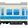

-
江ノ電

湘南、鎌倉観光の中心 藤沢から江の島やいろいろな名所を通って鎌倉まで
１日乗車券 (おとな) 600円
-
小田急線 
江ノ島すぐ！ 新宿から片瀬江ノ島まで片道627円
江ノ電の起点となる藤沢まで、片道586円江ノ電乗り放題など付いてる「江の島・鎌倉フリーパス」がお得！
ゆったり、特急ロマンスカーで行くこともできます。（別途特急料金がかかります）
-
JR
鎌倉へ 湘南新宿ラインや横須賀線
鎌倉五山の円覚寺や「あじさい寺」としても有名な明月院など
JR北鎌倉駅周辺にも、たくさん見どころがあります -
湘南モノレール
大船から湘南江の島まで